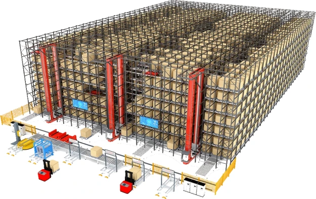

Smart Warehouse Case Study: How 129,000 Storage Locations Transform Supply Chain Efficiency

Summary
This case study explains a large-scale ASRS smart warehouse system with 129,000 storage locations, showing how automation transforms supply chain efficiency through inbound/outbound optimization, high-density storage, and full factory–warehouse integration.
Technology
- Automated Storage and Retrieval System (ASRS)
- AMR autonomous mobile robot system
- ACR automated storage and retrieval robots
- High-density racking system (8.6m structure)
- WMS warehouse management system
- AI supply chain optimization engine
- Inbound receiving automation system
- Outbound sorting and dispatch system
- Goods-to-person picking system
- IoT warehouse monitoring system
- ERP + MES integration platform
Challenge
Large-scale manufacturing and logistics operations face critical supply chain inefficiencies:
7.1 Slow inbound receiving and manual verification
7.2 Inefficient outbound order processing
7.3 Lack of real-time inventory visibility
7.4 Poor coordination between factory and warehouse
7.5 Low storage density and wasted space
7.6 High labor dependency in logistics operations
7.7 Delays in order fulfillment and dispatch
Solution
The ASRS smart warehouse system solves these challenges through:
8.1 Fully automated inbound receiving and scanning
8.2 High-density 129,000-location storage system
8.3 AMR + ACR robotic logistics coordination
8.4 WMS + AI real-time inventory management
8.5 Automated outbound sorting and dispatch
8.6 Goods-to-person picking stations
8.7 Factory–warehouse integrated workflow
8.8 Digital supply chain optimization engine
Workflow & Layout
9.1 Total storage capacity: 129,000 locations
9.2 8.6m high-density racking structure system
9.3 AMR fleet for horizontal transport operations
9.4 ACR robots for vertical storage access
9.5 Fully automated inbound receiving zone
9.6 Smart outbound sorting and packaging system
9.7 WMS system controlling all warehouse logic
9.8 Integrated factory supply chain system
Results & ROI
- 10.1 Supply chain efficiency improved by 200–400%
- 10.2 Storage utilization increased by 2–5x
- 10.3 Labor cost reduced by 50–85%
- 10.4 Order accuracy improved to 99.9%
- 10.5 Inbound processing time significantly reduced
- 10.6 Outbound dispatch speed greatly improved
- 10.7 Warehouse throughput significantly increased
- 10.8 Strong long-term ROI through automation
Equipment List
- 11.1 ASRS automated storage system
- 11.2 AMR logistics robot fleet
- 11.3 ACR robotic storage system
- 11.4 High-density racking structure
- 11.5 WMS warehouse management system
- 11.6 AI supply chain optimization system
- 11.7 Inbound scanning and sorting system
- 11.8 Outbound packing and dispatch system
- 11.9 IoT monitoring sensors
- 11.10 ERP/MES integration interface
Project Overview / Opening
12.1 This case demonstrates a full-scale smart warehouse transformation
12.2 129,000 storage locations enable industrial-scale logistics
12.3 System integrates factory production and warehouse logistics
12.4 Focus is on supply chain efficiency and automation depth
Key Points
- 13.1 Inbound and outbound are fully automated
- 13.2 Storage density is maximized through vertical design
- 13.3 AMR + ACR ensures full operational flexibility
- 13.4 WMS acts as central control brain
- 13.5 Supply chain is fully digitized
- 13.6 Factory and warehouse operate as one system
- 13.7 Real-time visibility improves decision making
Implementation / Workflow
14.1 Inbound goods are scanned and registered automatically
14.2 WMS assigns optimal storage location
14.3 ACR stores goods in high-density racks
14.4 AMR transports materials across warehouse zones
14.5 Orders trigger automated picking workflows
14.6 Goods-to-person stations handle final assembly
14.7 Outbound system sorts and packs goods
14.8 Dispatch is fully synchronized with factory output
Customer Value / Results
15.1 Full visibility across supply chain operations
15.2 Faster inbound and outbound processing
15.3 Reduced operational bottlenecks
15.4 Significant labor reduction in logistics
15.5 Higher storage and space utilization
15.6 Improved production-to-delivery speed
15.7 Scalable architecture for large enterprises
15.8 Strong long-term operational efficiency gains
Conclusion / Next Step
16.1 This case demonstrates how ASRS transforms supply chain performance at scale
16.2 129,000-location systems enable true factory–warehouse integration
If you are planning a smart warehouse project, we can support you with:
16.3 ASRS system design and engineering planning
16.4 Supply chain optimization strategy development
16.5 AMR + ACR system configuration design
16.6 Warehouse layout simulation and capacity planning
16.7 ROI and investment feasibility analysis
16.8 Turnkey smart warehouse implementation solutions
SEO Title
Smart Warehouse Case Study: How 129,000 Storage Locations Transform Supply Chain Efficiency
SEO Description
This case study explains a large-scale ASRS smart warehouse system with 129,000 storage locations, showing how automation transforms supply chain efficiency through inbound/outbound optimization, high-density storage, and full factory–warehouse integration.
Related Blog
Start with Your Business Challenge
Tell us about your warehouse, factory, or production requirements. We'll help you explore practical automation solutions and relevant project references.